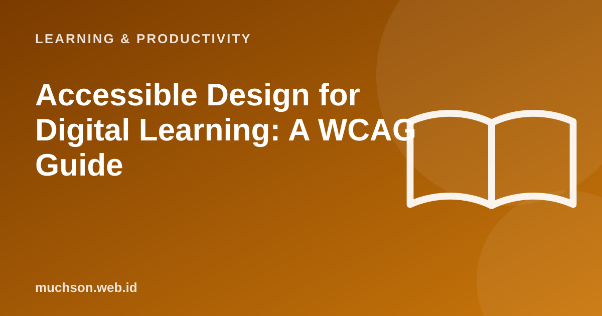

Home › Articles › Learning & Productivity
Learning & ProductivityAccessible Design for Digital Learning: A WCAG Guide
A learning platform that some learners cannot use is not only a technical problem, but a problem of fairness. Accessibility makes material usable by people with limited vision, colour blindness, hearing loss, or who use only a keyboard.

The four WCAG principles
Text description of the diagram
- Perceivable: Alternative text, contrast, text for video
- Operable: Usable with a keyboard, enough time, no harmful flashing
- Understandable: Clear language, consistent navigation, helpful error messages
- Robust: Correct code so it works with assistive technology
Check colour contrast
The five most common mistakes
A checklist for learning platforms
Note
Automated checkers catch only part of the problems. Test by hand with a keyboard and a screen reader, and involve users with particular needs where possible.
FAQ
What are AA and AAA in WCAG?
Levels of conformance. AA is the common target considered reasonable. AAA is stricter and not always possible for all content.
Is accessibility only for people with disabilities?
The benefit is wider: people on small devices, in bright sunlight, with an injured hand or a slow connection are helped too.
Where do I start?
Start with contrast, alternative text and the keyboard. Then make accessibility part of the design process from the beginning.